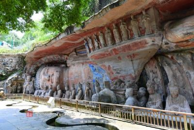
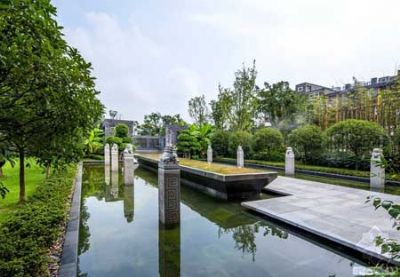
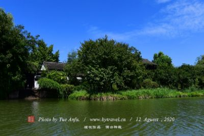

大足区
地处四川盆地东南，重 庆市西郊，位于北纬 29° 23′至 29°
52′，东 经 105° 28′至 106° 2′之间。公元758年，唐肃宗
颁令设置大足县。2011年经国务院批准撤销双桥区、大足县
设立大足区。
境内出露地层为中生界 三叠系、侏罗系，总厚度 374
米，其外有新生界第四系河岸堆积物。地质构造属新华夏 系
第三沉积带四川沉降褶带。境内地势西北和东 南高，中部及
东北部低缓，分低山、丘陵、平坝 及河谷 4 种地貌类型成“
六丘三山一分坝”之 势。有西山、南山、北山等低山，城东、
城西、 龙水、高升大坝等平坝。最高点在巴岳山南段云 台寺
山峰，海拔 934.7 米，最低点在雍溪镇玉峡 河堤，海拔 267.5
米。 |
|  |
大足石刻，位于重庆市大足县境内。大足石刻始于晚唐，历经五代而盛于两宋，是中国晚期石窟艺术中的忧秀代表。石窟多达76处，共有造像6万余躯，石刻铭文10万余字，总称大足石刻。其中，尤以北山摩崖石刻和宝顶山摩崖石刻最集中。北山，即古龙岗山，共290龛窟。著名龛窟，如心神车窟，窟正中之皤龙“心神车”尤为奇伟。其间净宝瓶观音、多罗、文殊、玉印观音、如意珠观音、普贤、日月观音、数珠手观音等，雕刻对称，严谨有序，浑然一体 |
|  |
大足海棠香国历史文化风情城依托大足石刻、山水资源和儒释道三教合一的文化根基，以宋风宋韵为文化脉络，将石窟文化艺术的历史成就深度挖掘，打造集旅游休闲、商务会务、酒店餐饮、影视体验、祈福文化、民俗活动为一体的古韵历史文化风情城。随着成渝经济区的统筹建设以及连通大足和成渝两地的成渝复线高速的同步实施，“海棠香国历史文化风情城”成为继大足石刻、龙水湖之后大足的又一新景点，将有力推进大足创建国家级历史文化名城。 建龙水湖风景区位于重庆市西部，距世界文化遗产—大足石刻核心景区—宝顶山约40公里，龙水湖风景区位于大足南部，坐落于巴岳山脉分水岭西侧，与铜梁、永川、双桥三区县市相邻；地跨玉龙镇、龙水镇、双桥区。交通便捷，距全国著名的“五金之乡”龙水镇5公里，北距大足县城22公里，距成渝高速公路10余公里，东距重庆80公里，西距成都260公里，从湖区建有两条国家二级标准公路与大足县的主要高等交通要道 |
|  |
龙水湖风景区位于重庆市西部，距世界文化遗产—大足石刻核心景区—宝顶山约40公里，龙水湖风景区位于大足南部，坐落于巴岳山脉分水岭西侧，与铜梁、永川、双桥三区县市相邻；地跨玉龙镇、龙水镇、双桥区。交通便捷，距全国著名的“五金之乡”龙水镇5公里，北距大足县城22公里，距成渝高速公路10余公里，东距重庆80公里，西距成都260公里，从湖区建有两条国家二级标准公路与大足县的主要高等交通要道 |
|